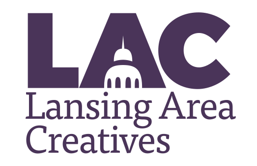
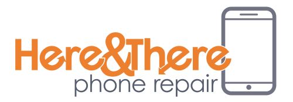
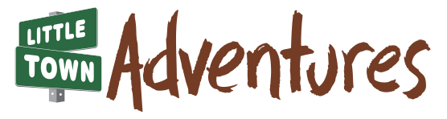
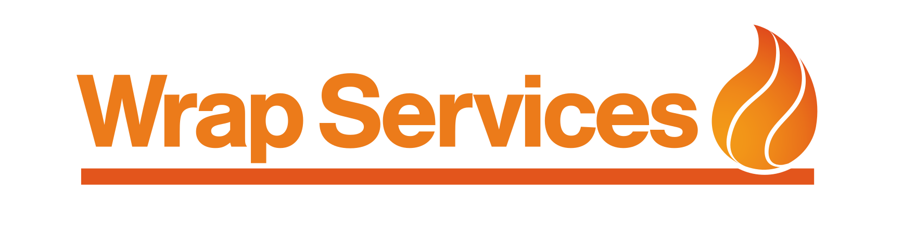
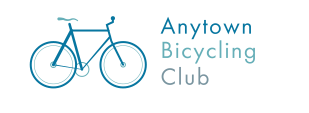

Logo designs by John Zomer
Please see the logos Vieth Consulting and it's products

My most recent side project, I am developing an organization for local people doing creative work like design, coding or marketing called Lansing Area Creatives.
Middle Atlantic States Correctional Association was looking for something patriotic for their new logo. I also worked with the on their
yet-to-be-launched new website

A mobile phone repair shop that makes house calls. I worked closely with the owner who had a very strong vision for his logo.

Little Town Adventures is a playmat featuring local landmarks as stops for toy cars. I worked with the inventor to design the logo as well as the actual playmats.
RFR is a Grand Rapids area indie band known for their pop sensibilities and their high-energy front-woman. I hand lettered this logo based on the letterforms of an existing typeface.

Wrap Services is a Lansing-area company that installs vinyl wraps on signs, vehicles and more.

ABC is a fictional organization used to demonstrate the benefits of the MemberLeap software to sports clubs. This logo was designed within 2 hours of the conversation that lead to its creation.